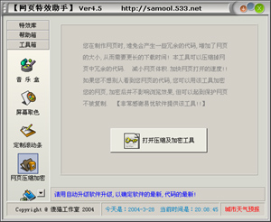
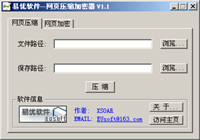

网页压缩及加密码工具
您在制作网页时,难免会产生一些冗余的代码,增加了网页
的大小,从而需要更长的下载时间! 本工具可以压缩掉网
页中冗余的代码. 减小网页体积.加快网页打开的速度!!
| 如果您不想别人看到您网页的代码,您可以用该工具加密
您的网页,加密后并不影响浏览效果,但可以起到保护网页
不被复制. 【非常感谢易优软件提供该工具!!】
点击【打开网页压缩及加密工具】即可启动该工具。


傻猫制作 2003-3-28